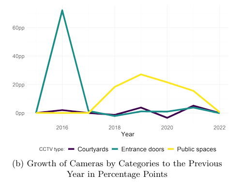
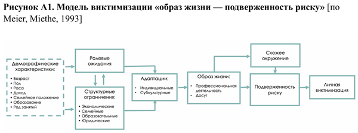
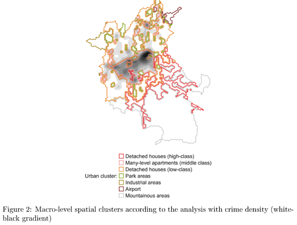
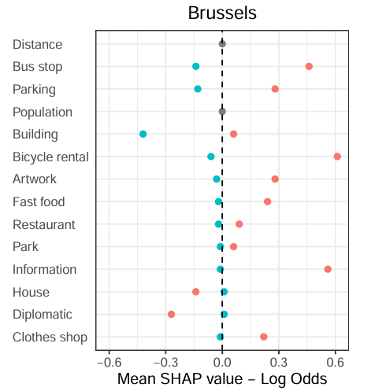
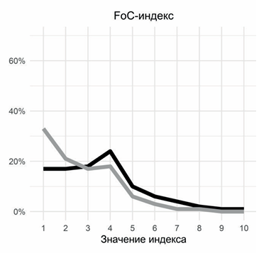
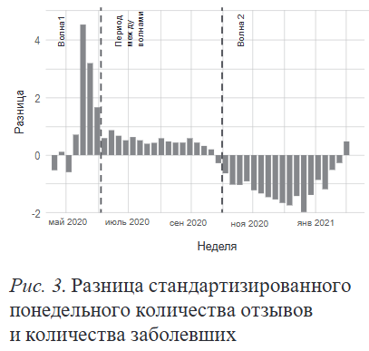
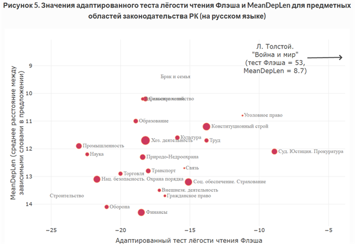
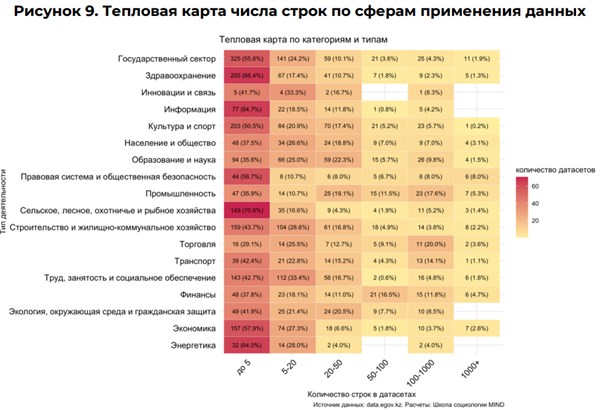
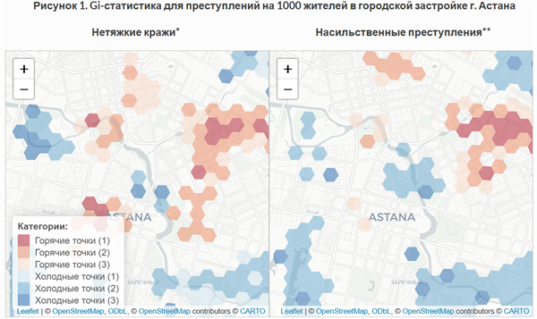
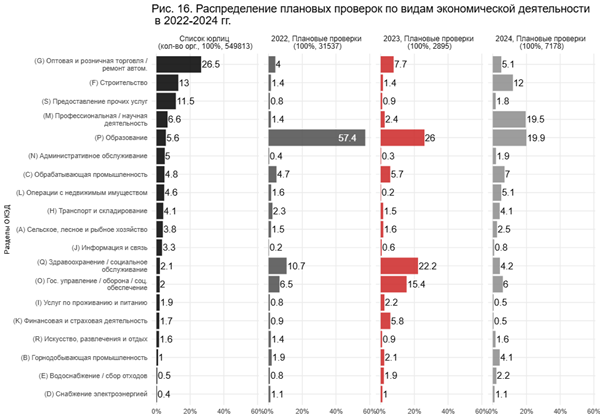

Publications
Empirical legal studies · Sociology of culture · Criminology · Computational social science
Peer-reviewed articles
Surveillance as Governance: Policing Effectiveness and Political Control in the Moscow AI Experiment

Cognitive Sociology: Revisiting the Role of Cognition in Sociological Explanation
Where the Hard Road Leads: Criminal Prosecution Experience and the Trajectory of Subsequent Victimization

What’s Sauce for the Goose is Sauce for the Gander? Near-repeat Victimization Across Different Urban Morphologies: Evidence from Almaty, Kazakhstan

A Tale of Four Cities: Exploring Security Through Environmental Characteristics of CCTV Equipment Placement

From Call to Emergency Card: Seeking “112” Operator Discretion
Gaze Ex Machina: A Brief History of Police CCTV Surveillance in Russia and Western Countries
Infrastructure as a Camera Obscura of Social Classifications: Urban Video Surveillance Systems in Small Cities
Victims of Their Own Fear: Perceived Safety and Crime Victim Experience in Russia

“Street-Level Algorithm”: Two Styles of Automated Law Enforcement in the Moscow “Social Monitoring” Application

Surveillance Cameras in Cities: Security and Territory
Field Experiments and the Rubin Causal Model: A Review of Approaches and Current Research
[Review] Ehrlich, E., Fundamental Principles of the Sociology of Law
No matching items
Preprints
Selected policy reports
Functional Communication in the Unified Kazakhstan Complaint Service: Text Analysis
Readability of Legal Acts of the Republic of Kazakhstan: A Computational Linguistics Analysis and Practical Recommendations

Opening the Data: An Assessment of Open Data Availability in the Republic of Kazakhstan

Crime Place Never Changed? Spatial Distribution of Non-Serious Theft and Violent Crime in Astana and Almaty

Regulation and Supervision in Kazakhstan, 2023: The End of the Moratorium

How and by Whom Forensic Expertise Is Made: Experts in the Context of Interagency Interaction
Crime and Victimization in Russia, 2018–2021: Results of the Second Wave of the Russian Crime Victimization Survey (RCVS-2021)
No matching items
Datasets
I managed wave 2 of the Russian Crime Victimization Survey end to end — questionnaire design, RDD sampling and stratification, CATI fieldwork, data curation — and served on the team for wave 3. It remains the only repeated nationwide victimization survey in Russia. The two Kazakhstani datasets are deposited on researchdata.kz, a data hub for social scientists working on the country, launched through Kazakhstan Sociology Lab in June 2026.
Russian Crime Victimization Survey: Pooled Cross-Sections and a Longitudinal Panel, 2018–2024
Spatial Data on Socio-Economic Characteristics in Almaty
Register of Renamings of Administrative-Territorial Units and Constituent Parts of Settlements in the Republic of Kazakhstan, 1990–2026
No matching items